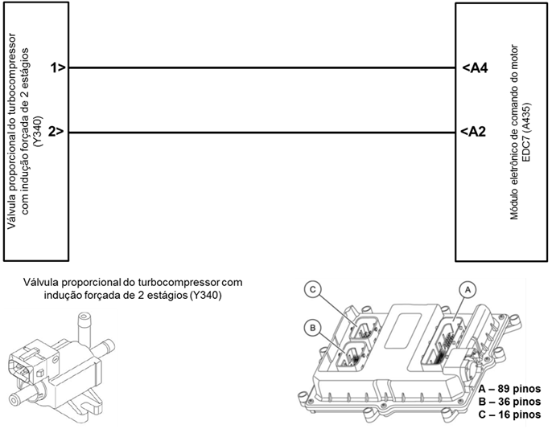
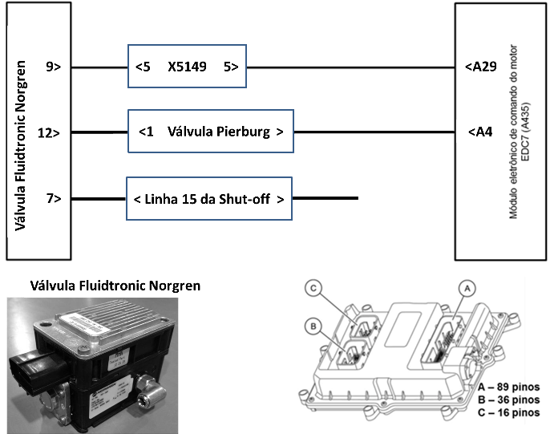
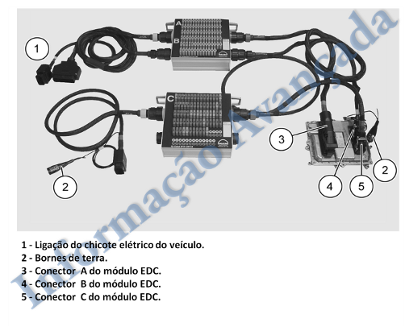

|


Descrição da Falha
Circuito da válvula
reguladora do turbocompressor, curto circuito para o positivo.
Indicação de Falha
Luz de alerta acende constantemente com os símbolos  e e  e ativa o alarme sonoro longo, com o veículo andando ou parado.
e ativa o alarme sonoro longo, com o veículo andando ou parado.
A LIM permanece desligada.
Estratégia de Monitoramento
O módulo EDC7 monitora o circuito quanto a curto para o massa, para o positivo e interrupção da linha.
Efeito da Falha
Redução da rotação para 2000 rpm e redução do torque.
Possíveis Falhas
FMI 5: Curto circuito para o massa.
FMI 6: Curto circuito para o positivo.
FMI 10: Nenhum sinal existente
(interrupção da linha).
Válvula reguladora do turbocompressor com defeito.
Aviso
  Verificar qual o modelo de válvula reguladora do turbocompressor está instalada no veículo. Verificar qual o modelo de válvula reguladora do turbocompressor está instalada no veículo.
Registros de Falhas em Outros
Módulos de Comando
Considerar os esquemas
elétricos do veículo.
| Verificação
|
Medição |
Eliminação da
Falha |
Para veículos com a:
- válvula proporcional do turbocompressor Y340
|
Utilize o Tester Box e consulte o manual Verificação EDC7 C32:
- Medir a resistência entre o pino A02 e
o pino A04
Valor nominal:
80 - 100 Ω
|
– Verificar os cabos quanto rompimento ou oxidação
– Verificar as conexões quanto mau contato ou pinos tortos
– Verificar a válvula
proporcional e eventualmente substituir
– Caso nenhuma falha
seja verificada, substituir o módulo EDC7
|
Para veículos com a:
- válvula proporcional do turbocompressor Norgren
|
Utilize o Tester Box e consulte o manual Verificação EDC7 C32:
- Medir a resistência entre o pino A04 e
o pino A29
Valor nominal:
18 - 22 KΩ
|
Tester Box

|